Audit-wide figures are reproduced for navigation. Calculations live in
summary.json. Pairing is index-matched, not CRN.
Source digests: V4.2B ce7bbea03c9ac9ea77bad761e371d5abcd96965e7aa55daf76269ee51469be9a;
V4.2C 99ec523a706632391c85e16cae505e6cd11a6f14d15682eb711515aefcf76c93.
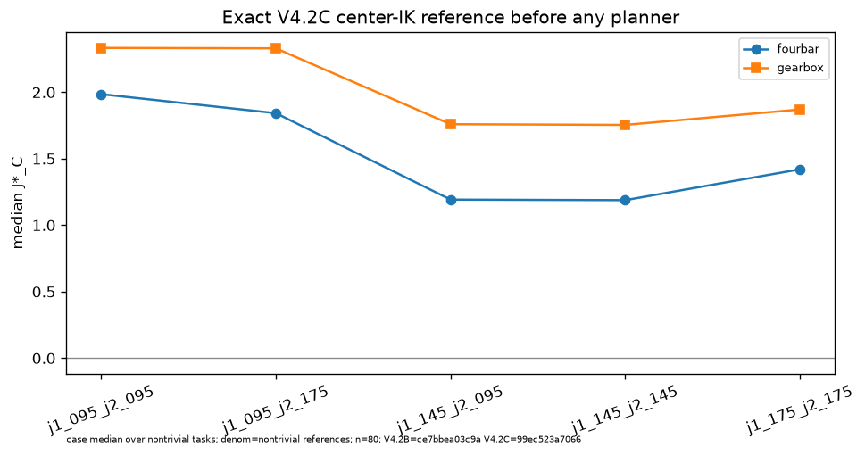
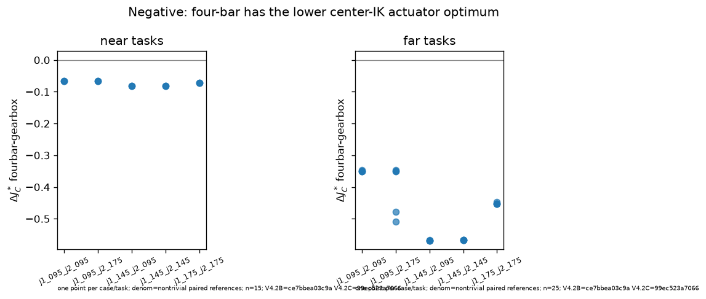
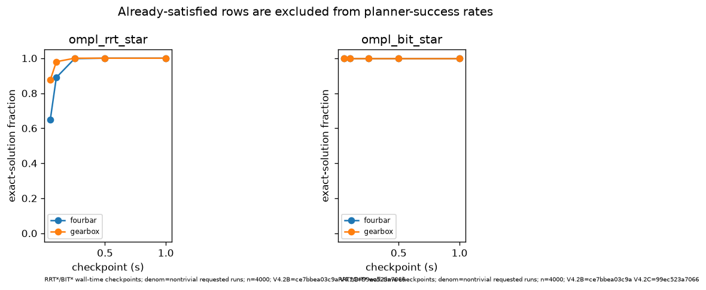
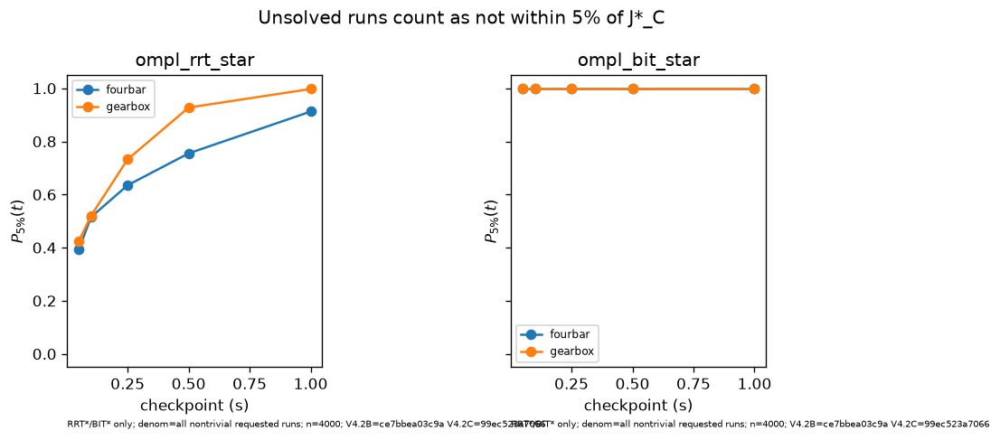
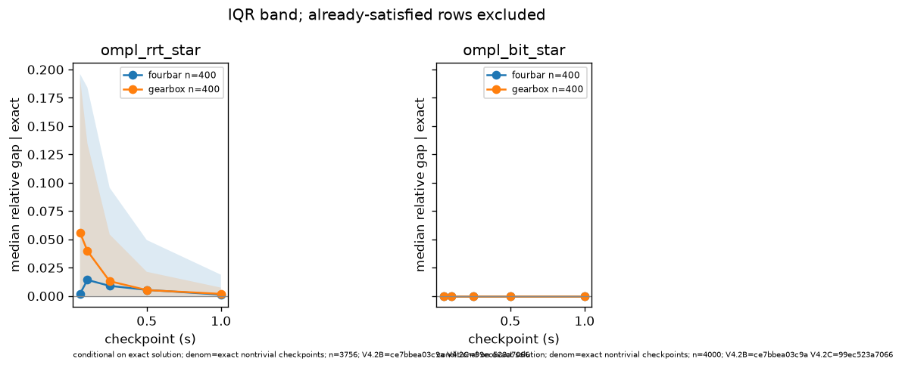
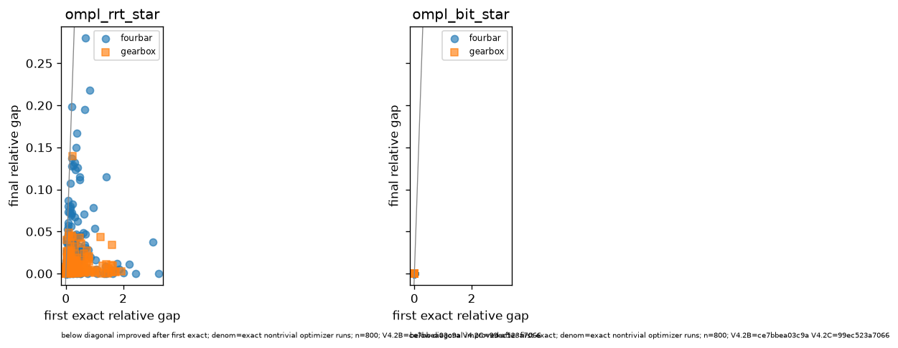
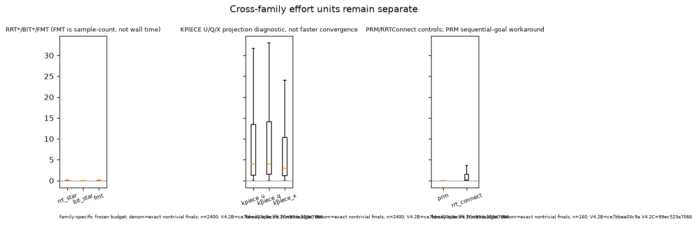
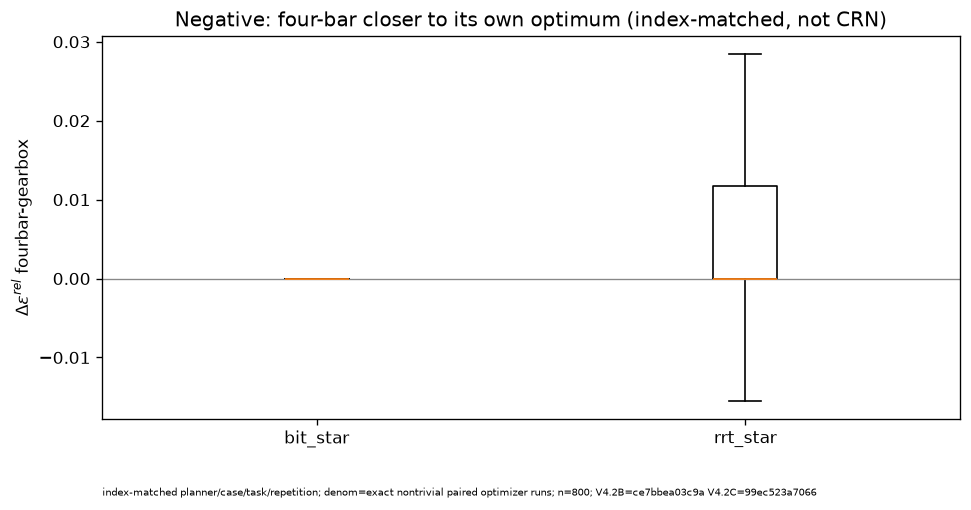
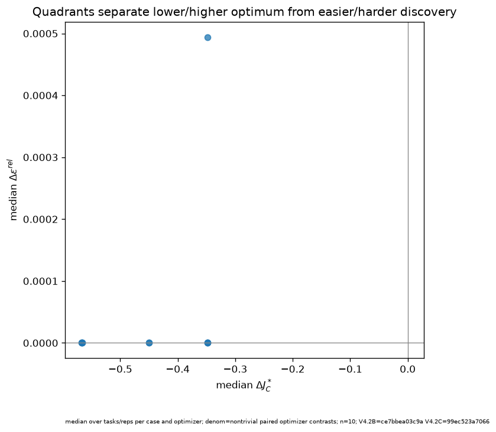
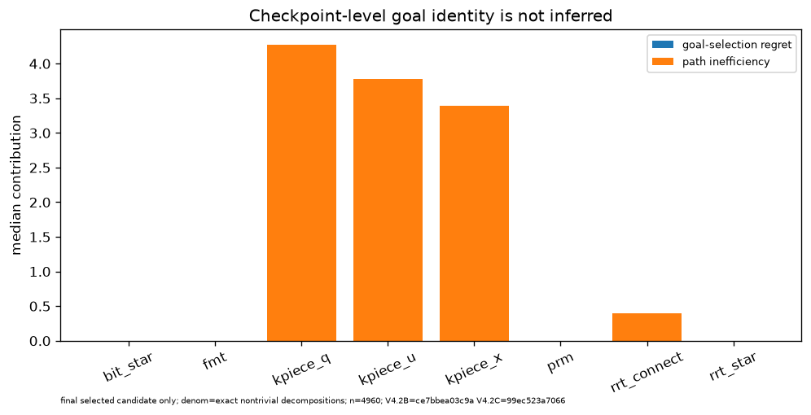
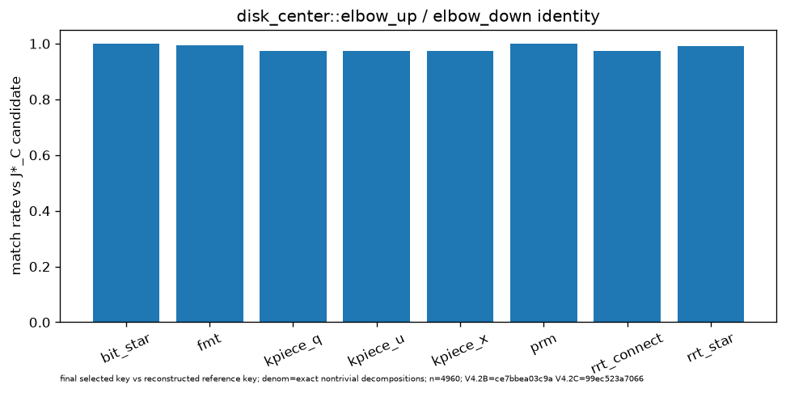
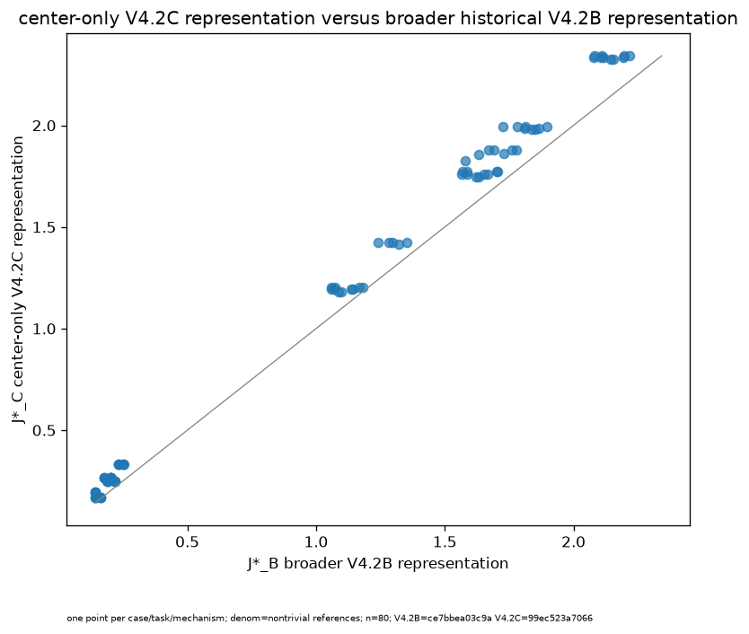